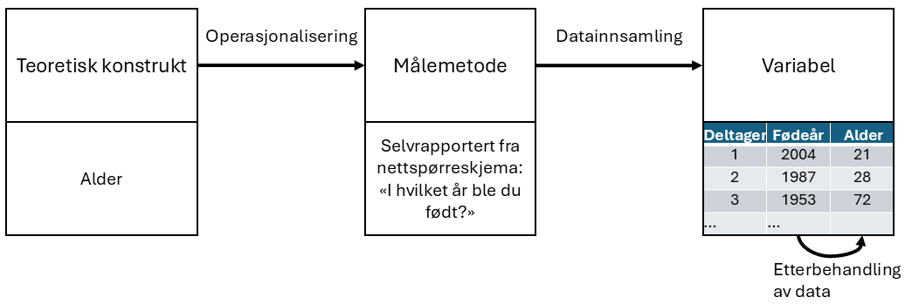
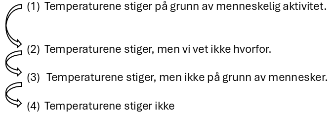

2 Måling i utdanningsforskning
When you can measure what you are speaking about, and express it in numbers, you know something about it, when you cannot express it in numbers, your knowledge is of a meager and unsatisfactory kind; it may be the beginning of knowledge, but you have scarely, in your thoughts advanced to the stage of science.
– Lord Kelvin 1
Sitatet fra Lord Kelvin, en av attenhundretallets store vitenskapsmenn, viser en stor tro på verdien av å måle ting. Hvis man ikke kan måle noe, vet man ikke noe vitenskapelig om det. Nuvel, i utdanningsforskning gjelder nok ikke dette. Kanskje gjelder heller det motsatte, at hvis noe er målt, så bør vi være ekstra skeptiske til det:
We’re seeing that the published literature–you know, in some of our best journals–features measures that have little or no validity evidence. Measurement, schmeasurement. Applied researchers are, as a norm, not engaged in this process of construct validation.
– Jessica Kay Flake2
I dette kapittelet skal vi lære hvorfor vi bør være skeptiske til kvantitative målinger i utdanningsforskning og hva som skal til for å gjøre gode målinger. Men først må vi lære de vanligste begrepene man benytter for å beskrive målinger. Dette kapittelet bygger i stor grad på Campbell & Stanley (1963) og (Stevens1946?) for diskusjonen om måleskalaer.
2.1 Begreper om målinger
2.1.1 Variable og verdier
Kvantitative analyser baserer seg på at man har gjort en spesifikk måling av mange forskjellige ting. I utdanningsforskning er tingene gjerne skoler, lærere, klasser, elever, rektorer, læreplaner, lærebøker, elevtekster eller liknende. Måling er å tildele tall, merkelapper eller andre veldefinerte beskrivelser til disse tingene. Så alle følgende eksempler vil regnes som målinger:
- Min alder er 33 år.
- Jeg preferanse for ansjon er at jeg ikke liker det.
- Mitt kromosomale kjønn er mann.
- Mitt selvidentifiserte kjønn er kvinne.
I denne listen viser den fete skriften “det vi skal måle”, som kalles variabelen, og den kursiverte skriften viser “det som er målt”, som kalles verdien. Skillet mellom variabelen og de ulike verdiene variabelen kan anta er sentralt:
- Min alder (i år) kunne ha hatt verdiene 0, 1, 2, 3 … osv. Den øvre grensen for verdien alderen min kunne hatt er litt uklar, men i praksis kan si at den høyeste mulige alderen er 150, siden ingen mennesker noensinne har levd så lenge.
- Når jeg blir spurt om jeg liker ansjos, kunne jeg ha svart at jeg gjør det, eller jeg gjør det ikke, eller jeg har ingen mening, eller jeg gjør det av og til.
- Mitt kromosomale kjønn er nesten helt sikkert enten mann (\(XY\)) eller kvinne (\(XX\)), men det finnes noen andre verdier variabelen kunne hatt. Jeg kunne for eksempel hatt Klinefelters syndrom (\(XXY\)), som er mer likt mann enn kvinne.
- Mitt selvidentifiserte kjønn er også svært sannsynlig enten mann eller kvinne, men det trenger ikke å samsvare med mitt kromosomale kjønn. Jeg kan også velge å identifisere meg med ingen av delene, eller eksplisitt kalle meg selv transperson.
Som du ser, for noen ting (som alder) virker det ganske opplagt hva mulige verdier bør være, mens for andre virker det vanskelig. Men selv det å definere alderen min kan være vanskelig. For eksempel, i eksemplet ovenfor antok jeg at det var greit å måle alder i år og runde av til heltall. Men hvis du er en pedagog som jobber med små barn er dette altfor grovt, og derfor måles ofte alder i år og måneder (hvis et barn er 2 år og 11 måneder, skrives dette vanligvis som “2;11”). Hvis du er interessert i nyfødte, vil du kanskje måle alder i dager siden fødsel, kanskje til og med timer siden fødsel. Med andre ord, måten du spesifiserer de tillatte måleverdiene på er en viktig del av å planlegge en studie.
2.1.2 Operasjonalisering av teoretiske konstrukter
Alle tingene vi ønsker å måle (slik som alder, motivasjon, læring, undervisning) har en teoretisk beskrivelse. Denne teoretiske beskrivelsen kalles et teoretisk konstrukt. Ofte utelater man “teoretisk” om omtaler det bare som “konstruktet”. Når vi skal gjøre en måling av et teoretisk konstrukt må vi lage en målemetode. Dette kalles å operasjonalisere konstruktet, og vi kaller målemetoden en operasjonalisering av konstruktet. Begrepene blir oppsummert i Figure 2.1.
Kort fortalt handler operasjonalisering om å omforme et konstrukt, som ofte er ganske vagt, til en helt presist definert måling. Operasjonalisering omfatter blant annet:
- å definere hva som skal måles. For eksempel, betyr “alder” “tid siden fødsel” eller “tid siden unnfangelse”? Dette er et viktig skille når man undersøker læring hos de aller yngste barna.
- å bestemme målemetode. For å måle alder, vil du spørre personen selv eller en forelder eller kanskje slå opp i et offisielt register? Hvis du bruker selvrapportering, hvordan vil du formulere spørsmålet?
- å definere hvilke verdier målingene kan ha. Verdiene er ofte numeriske, men ikke alltid. Ved aldersmåling kan vi spørre: ønsker vi alder kun i år, eller skal vi inkludere måneder, dager, eller timer? For andre målinger, som kjønn, er verdiene ikke numeriske. Her må vi vurdere hvilke alternativer vi skal tilby. Er det tilstrekkelig med “mann” og “kvinne,” eller er “annet” nødvendig? Skal vi la deltakerne velge blant forhåndsdefinerte svaralternativer eller skal forskningsdeltagerne få skrive fritt? Hvordan vil vi i så fall benytte disse svarene videre? Skal du slå sammen de som har skrevet “transmann” og “skeiv, men biologisk kvinne” til samme verdi?
Operasjonalisering er komplisert og det finnes ikke én riktig måte å gjøre det på. Hvordan du velger å operasjonalisere det uformelle konseptet “alder” eller “kjønn” til en formell måling avhenger av hva du trenger målingen til. Ofte vil du oppdage at forskerne som jobber innen ditt område har veletablerte praksiser for hvordan man skal måle konstruktet, men andre ganger må du utvikle en operasjonalisering av konstruktet som passer til din forskning.
Etter å ha operasjonalisert konstruktet kan man gjøre målinger. Hver enkelt måling gir en verdi, og samlingen av verdier utgjør en variabel i datasettet.
Til hverdags benytter forskere disse begrepene om hverandre, de kan for eksempel si “operasjonalisering av variabelen” heller enn “av konstruktet”, men det er svært nyttig å forstå distinksjonene.
2.1.3 Forskjellige målemetoder
I utdanningsforskning gjør vi ofte målinger på mennesker. Hvilken spesifikk målemetode skal du bruke for å finne ut hvor gammel noen er? Her er et utvalg:
- Selvrapportering: Selvrapportering er at folk oppgir verdien på variabelen selv. Forskeren spør forskningsdeltagerne “hvor gammel er du?”, for eksempel i et spørreskjema. Det er rakst, billig og enkelt, men det fungerer bare med folk som ikke lyver om alderen sin og er gamle nok til å forstå spørsmålet.
- Tredjepartsrapportering: Du kan spørre andre om å oppgi verdien på variabelen, for eksempel foreldrene eller læreren til barnet.
- Registerdata: Noen typer data kan du slå opp i offisielle registre, for eksempel fødselsdato. For de fleste typer informasjon om personer krever dette en søknad til en etiske komite, som for eksempel Sikt.
- Observasjon: Observasjon er når forskerne observerer direkte. Det er vanskelig å observere alderen direkte.
- Biomarkører: Biomarkører er lite benyttet i utdanningsforskning. Du kan anslå alderen til en person ved radiografi av tennene eller en celleprøve, du kan anslå hvor stresset en elev er ved en prøve ved å måle hjerteslagene eller du kan måle hjerneaktivitet ved et elektroencephalogram.
Disse måtene kan man også benytte til å måle andre ting enn mennesker. For eksempel kan man
2.2 Målenivåer
Resultatet av en måling kalles altså en variabel. Vi skal lære fire forskjellige typer variable. Dette er de forskjellige målenivåene eller måleskalaene.
2.2.1 Nominell variabel
En nominell variabel (også kjent som en kategorisk variabel) er en variabel der de mulige verdiene er navn på kategorier. Et eksempel er øyenfarge; de mulige verdiene er “grønn”, “blå”, “grå”, “brun”, og så videre. Kjønn er en nominell variabel som ofte har bare to mulige verdier, “mann” og “kvinne”, men som kan ha flere. I utdanningsforskning er ofte variabelen skole av denne typen, der de mulige verdiene er navn på skoler (“Dalsiden Skole”, “Vangenhaug Skole”, osv.). Ordet nominell kommer av nomen som er latin for navn – en nominell variabel har altså verdier som er navnet på kategorier. For denne typen variabler gir det ikke mening å si at en av dem er “større” eller “bedre” enn noen annen, man kan altså ikke sortere dem i noen naturlig rekkefølge. Og det gir absolutt ikke mening å snakke om gjennomsnittet av målingene – hva skulle “elevene i studien sin gjennomsnittlige øyenfarge” ha vært? For å regne gjennomsnitt måtte man summert de 10 verdiene og delt på 10, men hva blir blå + grønn + blå + brun? Kort sagt, verdiene til nominelle variabler er kun navnet på en kategori. Verdiene har ikke noen naturlig rekkefølge, de kan ikke adderes, multipliseres eller regnes med på noen måte.
Men man kan telle antallet innenfor hver kategori. Anta at jeg forsker på hvordan lærere pendler til og fra jobb. En variabel jeg burde målt3 er hva slags transportmiddel lærerne bruker for å komme seg på jobb. Denne “transporttype”-variabelen kan ha ganske mange mulige verdier, inkludert: “tog”, “buss”, “bil”, “sykkel”. La oss anta at disse fire er de eneste mulighetene og forestill deg at jeg spør 100 lærere om hvordan de kom seg på jobb i dag, med dette resultatet (Table 2.1).
| Transportmiddel | Antall lærere |
|---|---|
| (1) Tog | 12 |
| (2) Buss | 30 |
| (3) Bil | 48 |
| (4) Sykkel | 10 |
Så, hva var den gjennomsnittlige transporttypen? Åpenbart er svaret her at det ikke finnes noen. Det er et tåpelig spørsmål å stille. Du kan si at reise med bil er den mest populære metoden, og reise med tog er den minst populære metoden, men det er stort sett alt. Legg også merke til at rekkefølgen jeg viser alternativene i ikke er veldig interessant. Jeg kunne ha valgt å vise dataene som i Table 2.2.
| Transportmiddel | Antall lærere |
|---|---|
| (3) Bil | 48 |
| (1) Tog | 12 |
| (4) Sykkel | 10 |
| (2) Buss | 30 |
…og ingenting endrer seg egentlig.
2.2.2 Ordinal variabel
En ordinal variabel er en nominell variabel der de ulike kategoriene har en naturlig rekkefølge. Ordet ordinal kommer av samme ord som “ordning”, kategoriene kan ordnes i en rekkefølge, og det engelske “order”, “the categories have a natural order”. Her er et typisk eksempel: Tenk deg at jeg er interessert i elevers holdninger til klimaendringer. Jeg ber så noen elever om å velge det utsagnet som best samsvarer med deres holdning ut fra disse fire utsagnene:
- Temperaturene stiger på grunn av menneskelig aktivitet
- Temperaturene stiger, men vi vet ikke hvorfor
- Temperaturene stiger, men ikke på grunn av mennesker
- Temperaturene stiger ikke
Legg merke til at disse fire utsagnene faktisk har en naturlig rekkefølge i hvordan de måler enighet med nåværende vitenskapelig konsensus. Utsagn 1 er en nær match, utsagn 2 er en mindre nær match, utsagn 3 er ikke en særlig god match, og utsagn 4 er i sterk motsetning til nåværende konsensus. Derfor kan jeg ordne elementene som 1 \(>\) 2 \(>\) 3 \(>\) 4, som viser at “holdning til klimaendring”, operasjonalisert på denne måten, er en ordinal variabel.
La oss anta at jeg stilte 100 elever disse spørsmålene og fikk svarene vist i Table 2.3.
| Respons | Antall |
|---|---|
| (1) Temperaturene stiger på grunn av menneskelig aktivitet | 51 |
| (2) Temperaturene stiger, men vi vet ikke hvorfor | 20 |
| (3) Temperaturene stiger, men ikke på grunn av mennesker | 10 |
| (4) Temperaturene stiger ikke | 19 |
Det rimelig å gruppere, for eksempel, (1), (2) og (3) sammen, og si at 81 av 100 personer var i det minste delvis enig med vitenskapen. Og det er også ganske rimelig å gruppere (2), (3) og (4) sammen og si at 49 av 100 personer registrerte i det minste noe uenighet. Men det ville være fullstendig merkelig å gruppere (1), (2) og (4) sammen og si at 90 av 100 personer sa… hva da? Det er ingenting fornuftig som tillater deg å gruppere disse svarene sammen i det hele tatt.
Det er fristende å regne med svaralternativene (1) til (4) som om de var tall. For eksempel er det fristende å si at gjennomsnittet av svar (1), (2) og (3) er \(\frac{2+3+4}{3} = 2\). Det ville vært galt, siden det regnestykket krever at det er like stor forskjell mellom svaralternativ (1) og (2) som mellom (2) og (3). Men man kan argumentere for at konstruktet “enighet med vitenskapelig konsensus” er som i Figure 2.2, der det er større forskjell mellom (1) og (2) og (2) og (3).

Når en ordinal variabel markeres med tall, som er helt vanlig, skal man altså ikke tolke tallstørrelsene bokstavelig og anta at man kan regne med dem – tallene er der kun for å markere kategorienes rekkefølge.
Et vanlig eksempel på en ordinal variabel i utdanningsforskning er “høyeste fullførte utdanningssnivå”. Du kan si at en person som kun har fullført ungdomsskolen har mindre utdanning en en person som har fullført videregående, og så videre. Med ordinale variable vet man ikke hvor mye større en verdi er enn en annen. For eksempel gir det ikke mening å spørre om det er større forskjell mellom “ungdomsskole” og “videregående” enn mellom “videregående” og “bachelor”. Er utdanningsnivået på en bachelor mye høyere eller litt høyere enn fullført videregående? Hvis variabelen er ordinal kan man ikke besvare det spørsmålet.
2.2.3 Intervallvariabel
I motsetning til variabler på nominellt og ordinalt målenivå, er intervallvariable og forholdstallsvariable variabler der tallverdien er meningsfull. For variabler med intervallskala er forskjellene mellom tallene tolkbare, men variabelen har ikke en “naturlig” nullverdi. Et godt eksempel på en variabel med intervallskala er temperaturmåling i grader celsius. Hvis det for eksempel var 15\(^{\circ}\) i går og 18\(^{\circ}\) i dag, så er differansen mellom dem, 3\(^{\circ}\), meningsfull og måler en forskjell i temperatur. Dessuten er disse tre gradene i forskjell nøyaktig den samme forskjellen som mellom 7\(^{\circ}\) og 10\(^{\circ}\).4 Kort sagt er addisjon og subtraksjon meningsfulle for variabler med intervallskala. Merk at dette ikke var tilfelle for ordinale variabler.
Men legg merke til at 0\(^{\circ}\) ikke betyr “ingen temperatur i det hele tatt”. Det betyr faktisk “temperaturen der vann fryser”, noe som er ganske vilkårlig. Mangelen på et naturlig nullpunkt gjør meningsløst å multiplisere og dividere temperaturer. Det er feil å si at 20\(^{\circ}\) er dobbelt så varmt som 10\(^{\circ}\), akkurat som det er rart og meningsløst å hevde at 20\(^{\circ}\) er negativ to ganger så varmt som -10\(^{\circ}\).
Ordinale variabler er vanlige i utdanningsforskning. Anta at jeg er interessert i å undersøke bruken av nettbrett over tid. Da er det naturlig å sammenlikne bruken av nettbrett i forskjellige år, så en variabel i datasettet er årstall Dette er en variabel med intervallskala. En elev som begynte på skolen i 2018 begynte 5 år før en student som begynte i 2023; differanser gir altså mening. Det ville derimot vært helt meningsløst å dele 2023 på 2018 og si at den andre eleven begynte 0,24 % senere enn den første eleven; ganging og deling gir altså ikke mening. Derfor er årstall på en intervallskala.
Tid på døgnet er en annen variabel på intervallskala. (Det gir mening å sammenlikne klokka 14 og klokka 7 ved å si “sju timer senere”, men det gir ikke mening å sammenlikne dem ved å si “dobbelt så mye tid på døgnet.”)
2.2.4 Forholdstallsvariabel
Den fjerde og siste typen variabel er variabler på forholdstallsnivå. Dette er variabler med et nullpunkt der det er greit å multiplisere og dividere. Et godt eksempel på en variabel på forholdstallsnivå er tid. Når man måler elevers ferdigheter er det vanlig å registrere hvor lang tid elevene bruker på å løse en oppgave, fordi det er en indikator på hvor vanskelig oppgaven er. Anta at Roar bruker 2,3 sekunder på å svare på et spørsmål, mens Bård bruker 3,1 sekunder. Som med en intervallskalavariabel, er både addisjon og subtraksjon meningsfulle her. Bård brukte virkelig 3,1 - 2,3 = 0,8 sekunder lengre enn Roar. Men legg merke til at multiplikasjon og divisjon også gir mening her: Bård brukte \(3,1/2,3 = 1,35\) ganger så lang tid som Roar på å svare på spørsmålet. Og grunnen til at du kan gjøre dette for en forholdstallsvariabel er at “null sekunder” virkelig betyr “ingen tid i det hele tatt”.
Her er noen flere variabler på forholdstallsnivå:
- inntekt (0 kr betyr virkelig “ingen inntekt”)
- antall barn (0 barn betyr virkelig ingen barn)
- antall år avlagt utdanning (0 år betyr ingen utdanning)
- antall riktige på matematikkprøven (0 riktig betyr ingen riktig)
Det siste eksempelet krever en analyse. Ofte måles “kompetanse”, “ferdighet” eller liknende ut fra antall riktige svar på en prøve eller annen ferdighetstest. La oss ta matematikkompetanse som et eksempel. Hvis Bård besvarer 20 spørsmål riktig på en matematikkprøve og Roar besvarer 10 riktig, kan man si at Bård fikk dobbelt så mange riktige. Man kan også si at han fikk 10 flere riktig. Addisjon, subtraksjon, multiplikasjon og divisjon gir mening, altså er det en forholdstallsvariabel. Men er det riktig å si at Bård har dobbelt så høy matematikkompetanse som Roar? Det kommer kanskje an på prøven og hvilke spørsmål man svarte riktig på? Hva hvis Roar svarte riktig på 10 vanskelige spørsmål mens Bård raste gjennom de 20 enkleste spørsmålene på prøven uten å få til noe mer? Eller hva hvis Roar ikke hadde besvart noen spørsmål riktig, hadde det vært riktig å si at han har null matematikkompetanse? Dette viser at hva som er riktig målenivå kan avhenge av hvilket konstrukt man operasjonaliserer; hvis forskeren operasjonaliserer antall riktige på prøven er variabelen på forholdstallsnivå, men hvis forskeren operasjonaliserer matematikkompetanse er saken en annen.5
2.2.5 Kontinuerlige og diskrete variabler
Man kan også karakterisere variable ut fra om de er kontinuerlige eller diskrete variabler (Table 2.4). Kort sagt handler det om dette:
- En kontinuerlig variabel er en variabel hvor det for alle par av verdier du kan tenke deg alltid er mulig å ha en annen verdi imellom.
- En diskret variabel er en variabel som ikke er kontinuerlig, altså vil det for en diskret variabel være to verdier uten noen annen verdi imellom.
Disse definisjonene virker sannsynligvis litt abstrakte, men de er ganske enkle når du ser noen eksempler. For eksempel er svartid kontinuerlig. Hvis Roar bruker 3,1 sekunder og Bård bruker 2,3 sekunder på å svare på et spørsmål, vil Louises responstid ligge imellom hvis hun bruker 3,0 sekunder. Og selvfølgelig vil det også være mulig for Ingrid å bruke 3,031 sekunder på å svare, noe som betyr at hennes svartid vil ligge mellom Louises og Roars. Fordi vi i prinsippet alltid kan finne en ny verdi for svartiden mellom to andre, er svartid en kontinuerlig variabel.
| continuous | discrete | |
|---|---|---|
| nominal | \( \checkmark \) | |
| ordinal | \( \checkmark \) | |
| interval | \( \checkmark \) | \( \checkmark \) |
| ratio | \( \checkmark \) | \( \checkmark \) |
Diskrete variabler er det motsatte. For eksempel er nominelle variabler alltid diskrete. Det finnes ikke en transporttype som faller “mellom” tog og fly, i hvert fall ikke på den samme måte som 2,65 faller mellom 2 og 3. Derfor er transporttype en diskret variabel. På samme måte er ordinale variable alltid diskrete. Selv om svaralternativet “Ganske enig” faller mellom “Helt enig” og “Hverken enig eller uenig”, er det ingen svaralternativer som faller imellom. Intervallskala- og forholdstallskala-variabler kan gå begge veier. Som vi så ovenfor, er svartid (en forholdstallsvariabel) kontinuerlig. Temperatur i grader celsius (en variabel på intervallnivå) er også kontinuerlig. Imidlertid er året du gikk i første klasse (en intervallskala-variabel) diskret. Det er ikke noe år mellom 2002 og 2003. Antall spørsmål du får riktig på en flervalgsprøve (en forholdstallskala-variabel) er også diskret. Siden et flervalgsspørsmål ikke kan være være “delvis korrekt”, er det ingenting mellom 5 av 10 riktige og 6 av 10 riktige. Table 2.4 oppsummerer forholdet mellom målenivåene og skillet mellom diskret/kontinuerlig. Celler med et hakemerke er mulige. Jeg prøver å hamre dette poenget hjem, fordi (a) noen lærebøker tar feil, og (b) folk veldig ofte sier ting som “diskret variabel” når de mener “nominalskala-variabel”. Det er veldig upresist.
2.2.6 Noen komplikasjoner: Likert-skalaer
I den virkelige verden er det mange variable som ikke passer så godt inn i disse målenivåene. Det er ikke problematisk, for målenivåene gir forskere likevel en mer presis måte å snakke om variablene sine. En vanlig målemetode som ikke helt passer inn i målenivåene er Likert-spørsmål. Likert-spørsmål er det vanligste verktøyet i spørreundersøkelser. Du har selv fylt ut hundrevis, kanskje tusenvis, av dem. Anta at vi har et spørsmål i en undersøkelse som ser slik ut:
Hvilken av følgende beskriver best din mening om påstanden “alle pirater er fantastiske”?
og deretter er alternativene som presenteres for deltakeren disse:
- Sterkt uenig
- Uenig
- Verken enig eller uenig
- Enig
- Sterkt enig
Disse svaralternativene er et eksempel på en 5-punkts Likert-skala, der folk blir bedt om å velge mellom én av flere (i dette tilfellet 5) tydelig ordnede muligheter, vanligvis med en verbal beskrivelse gitt i hvert tilfelle. Det er imidlertid ikke nødvendig at alle elementene er beskrevet. Dette er også et eksempel på en 5-punkts Likert-skala:
- Sterkt uenig
- Sterkt enig
Likert-skalaer er veldig praktiske, om enn noe begrensede, verktøy. Men hva slags målenivå er en Likert-skala på? De er åpenbart diskrete, siden du ikke kan gi et svar på 2,5. De er åpenbart ikke nominelle skalaer, siden elementene er ordnet; og de er heller ikke forholdstallsskalaer, siden det ikke er noe naturlig nullpunkt.
Men er de ordinalskala eller intervallskala? Da må vi bestemme om forskjellene mellom nabosvaralternativene er like. Ett argument sier at vi egentlig ikke kan bevise at forskjellen mellom “sterkt enig” og “enig” er like stor som forskjellen mellom “enig” og “verken enig eller uenig”. Det virker egentlig ganske åpenbart at de ikke er like i det hele tatt, så dette antyder at vi burde behandle Likert-skalaer som ordinale variabler. På den annen side ser det i praksis ut til at de fleste deltakerne tolker skalaen fra “sterkt uenig” til “sterkt enig” som “på en skala fra 1 til 5”. For eksempel, hvis man spør folk om hvor fornøyde de er med inntekten sin på en 7-punkts Likert-skala og sammenlikner dette med deres faktiske inntekt, så ser man at hvert nivå på Likert-skalaen svarer til omtrent like mye penger. Som en konsekvens behandler mange forskere variable med Likert-skalaer som en intervallskala.6 Det er ikke nødvendigvis en intervallskala, men i praksis er det nært nok til at vi tenker på det som en.
2.2.7 Samlevariabler
Mange teoretiske konstrukter er komplekse og fanges ikke opp av bare én måling. Hvis man skal måle kvaliteten på en lærers praksis i “Vurdering for læring” må man kanskje måle både hvordan læreren vurderer kompetansen til elever ut fra prøvesvar i tillegg til hvordan læreren gir tilbakemeldinger på prøven. Hvis man utelater en av delene har man ikke målt hele konstruktet “kvalitet på ‘vurdering for læring’-praksis”, så derfor må man kombinere delene. Når man kombinerer flere ulike målinger for å lage én variabel kalles det en samlevariabel.
I spørreundersøkelser måles gjerne konstruktene med samlevariabler, og et typisk eksempel er fra den store internasjonale undersøkelsen om elevers matematikk- og naturfags-kompetanse, TIMSS. For å måle elevenes indre motivasjon i matematikk stilte de elevene ni Likert-spørsmål på en firepunkts skala fra “Svært enig” til “Svært uenig”. Her er spørsmålene7:
- Jeg liker å lære matematikk
- Jeg skulle ønske at jeg ikke var nødt til å lære matematikk
- Matematikk er kjedelig
- Jeg lærer mye interessant i matematikk
- Jeg liker matematikk
- Jeg liker alt skolearbeid som har med tall å gjøre
- Jeg liker å løse oppgaver i matematikk
- Jeg gleder meg til timene i matematikk
- Matematikk er et av de fagene jeg liker best
Svarene på disse 9 spørsmålene slås sammen til en samlevariabel for indre motivasjon. Man kan tenke seg at man regner gjennomsnittet til de 9 svarene og lar det være verdien på elevens indre motivasjon, men i virkeligheten er det en mer avansert utregning for å lage samlevariabelen. Merk at spørsmål 2 og 3 måler indre motivasjon motsatt av de andre spørsmålene, altså at “Svært uenig” betyr at man har høy indre motivasjon. Før slike spørsmål analyseres reverserer man ofte svaralternativene slik at man kan tolke svarene likt som hos de andre spørsmålene.
Hvilket målenivå har slike samlevariabler? Det kommer an på. De kan være nominelle, for eksempel hvis en spesialpedagog lar elever ta et testbatteri og ut fra svarene lage en samlevariabel dysleksi med to mulige verdier, “har dysleksi” og “har ikke dysleksi”. Dette er en samlevariabel fordi den er regnet ut basert på mange andre. Men de aller vanligste samlevariablene er de som er laget på bakgrunn av mange Likert-spørsmål, slik som indre motivasjon ble målt i TIMSS-eksempelet over, og de behandles som om de er på en kontinuerlig intervallskala. Disse variablene er ikke helt kontinuerlige, for hvis man lager en samlevariablel ved å ta gjennomsnittet av 9 spørsmål, som hver har et heltall som svar, så kan man ikke få alle mulige verdier. For eksempel kan man få 3,11 og 3,22, men ikke 3,15. Likevel er det nært nok til at man benytter variablene som om de var kontinuerlige. De er kanskje heller ikke intervallskalaer, av samme grunner som ble nevnt om Likert-skalaer over.
2.3 Å vurdere en målemetodes kvalitet: Reliabilitet og validitet
Vi har nå lært begreper for å beskrive hvordan man operasjonaliserer et teoretisk konstrukt og dermed skaper en målemetode. Det er et åpenbart spørsmål vi ikke har diskutert ennå: er målingen god? Forskere diskuterer målemetoders kvalitet med to begreper reliabilitet og validitet. Enkelt sagt forteller reliabiliteten til en målemetode deg hvor stabil den er, mens validiteten til en målemetode forteller deg hvor gyldig den er.
2.3.1 En målings reliabilitet
Reliabilitet betyr altså hvor stabil målemetoden er. Baderomsvekta mi gir en svært reliabel måling av vekta mi, fordi den gir meg det samme svaret hver gang hvis jeg går av og på vekta flere ganger. Legg merke til at dette ikke betyr at baderomsvekta viser riktig vekt; det kan være at springfjæra i vekta har blitt litt løs slik at den viser noen kg for mye. Isåfall stemmer ikke vekta sin måling overens med min sanne vekt i det hele tatt, noe som betyr at målingen har lav validitet, men den har likevel høy reliabilitet.
Reliabilitet betyr altså at målingen gir samme verdi på tvers av situasjoner. Dette gir opphav til mange forskjellige undertyper av reliabilitet:
Test-retest-reliabilitet. Hvis vi gjentar målingen på et senere tidspunkt, får vi det samme svaret?
En prøve har høy test-retest-reliabilitet hvis elever hadde fått samme karakter hvis de tok prøven på et annet tidspunkt, som ville betydd at elevens dagsform ikke påvirker prøveresultatet.
En forskers vurdering av kvaliteten på lærerens forklaringer har høy test-retest-reliabilitet hvis det ikke spiller noen rolle hvilken time forskeren observer.
Inter-rater-reliabilitet. Hvis en annen person gjennomfører målingen, får vi da det samme svaret?
En måling av elevers adferd i en musikktime har høy inter-rater-reliabilitet hvis svarer er uavhengig av hvem som observerer timen.
Hvis karakteren på skriftlig eksamen i engelsk ikke avhenger av hvilken sensor som retter, har den høy inter-rater-reliabilitet.
Indre konsistens. Hvis en samlevariabel er satt sammen av mange undervariable, har undervariablene en tendens til å gi lignende svar?
Målingen av indre motivasjon fra TIMSS (nevnt over) har høy indre konsistens hvis de forskjellige undervariablene, altså svarene på hver av de ni spørsmålene, gir mer eller mindre samme svar.
Ikke alle samlevariable trenger å ha høy indre konsistens. Hvis vi vil lage en samlevariabel for kvaliteten på en lærers skriveundervisning med undervariablene ‘kvalitet på grammatikkundervisningen’ og ‘kvalitet på sjangerundervisningen’ gjør det ikke noe om undervariablenes verdier avviker.
Hvordan man bør vurdere en variabels reliabilitet avhenger av det teoretiske konstruktet. Anta at man skal måle konstruktet “elevers utagerende adferd” ved å observere én undervisningstime. Hvis formålet er å gi en generell vurdering av elevenes utagerende adferd vil målingen ha lav test-retest-reliabilitet, fordi den vil gi svært forskjellige svar avhenging av om du utfører målingen siste time fredag eller første time tirsdag. Hvis formålet derimot er å finne ut av hvordan elevenes adferd varierer i en undervisningsuke er hele poenget med målingen å fange opp disse variasjonene. Derfor må man tenke over det teoretiske konstruktet og forskningsformålet for å gi en vurdering av en målemetodes reliabilitet.
2.3.2 En målings validitet
En målemetode har høy validitet hvis den måler det man tror den måler. Validitet kalles også “gyldighet”, som er et godt ord for validitet. Man skiller ofte mellom mange typer validitet, men den viktigste, som kanskje innebefatter alle andre måter å snakke om en målings validitet på, er konstruktvaliditet.
2.3.3 Konstruktvaliditet
Konstruktvaliditet (også kalt begrepsvaliditet) er i bunn og grunn et spørsmål om hvorvidt du måler det du ønsker å måle. En måling har god konstruktvaliditet hvis den faktisk måler det teoretiske konstruktet, og dårlig konstruktvaliditet hvis den ikke gjør det. For å gi et veldig enkelt (om enn latterlig) eksempel, anta at jeg prøver å undersøke hyppigheten av juks blant ungdomsskoleelever på norsktentamen. Og måten jeg forsøker å måle det på er ved å be de juksende studentene om å reise seg i klasserommet slik at jeg kan telle dem. Når jeg gjør dette med en klasse på 30 elever, er det 0 elever som hevder å ha jukset. Så jeg konkluderer derfor med at andelen juksere i klassen min er 0 %. Dette er åpenbart litt latterlig. Men poenget her er ikke at dette er et veldig dypt metodologisk eksempel, men heller å forklare hva konstruktvaliditet er. Problemet med målingen min er at mens jeg prøver å måle “andelen personer som jukser”, måler jeg faktisk “andelen personer som er ærlige nok til å innrømme juks, eller selvskadende nok til å late som om de juksa”. Åpenbart er ikke disse det samme! Så målemetoden min har mislyktes, den måler ikke konstruktet jeg prøvde å måle, så den har dårlig konstruktvaliditet.
Det finnes flere måter en måling kan ha svak konstruktvaliditet på. For eksempel kan målingen bare måle en liten del av konstruktet, kalt (konstrukt-)underrepresentasjon, eller konstruktet kan måle andre ting enn det det skal, kalt (konstrukt-)irrelevans, se Figure 2.3.

For å ha høy konstruktvaliditet kan det være nødvendig å ha høy prediktiv validitet. Dette betyr at målingene dine samsvarer med andre variable – altså predikerer andre variable – slik man ville forvente. Hvis man måler en lærers motivasjon for yrket kan man kontrollere den prediktive validiteten ved å sjekke om de motiverte lærerne velger å bli i yrket. Hvis dette ikke er tilfelle har du lav prediktiv validitet, og da har du kanskje ikke målt lærernes motivasjon.
2.3.4 Et eksempel: måling av elevers indre motivasjon for matematikk
Nå har vi vært gjennom en hel bråte med begreper som man benytter for å beskrive målemetoder og kvaliteter ved dem, og nå skal vi benytte begrepene til å diskutere et eksempel, elevers indre motivasjon for matematikk. Poenget med eksempelet er å vise hvordan måling av helt vanlige begreper i utdanningsforskning er komplisert.
I et eksempel over viste vi frem hvordan TIMSS målte indre motivasjon ved hjelp av ni spørsmål i et spørreskjema. Da ber man elevene om å selvrapportere om sin indre motivasjon for matematikk. Dette virker godt; eleven vet selv hvilke følelser den har overfor matematikk, om den liker å jobbe med matematikk, gleder seg til matematikktimen og så videre. Trolig kan ingen andre rapportere like godt om elevens indre motivasjon, slik som foreldre eller lærere, for det er tross alt elevens egen sinnstiltstand man ønsker å måle. Kun eleven har tilgang til den.
Selvrapportering av indre motivasjon har høy reliabilitet. Hvis man setter elevene til å svare på spørreskjemaet en annen dag vil de svare mer eller mindre likt (test-retest-reliabilitet). Det spiller heller ikke så stor rolle hvordan spørsmålene er utformet, som gir høy indre konsistens. Om man spør “jeg er glad i matematikk” (enig/uenig) eller “jeg liker å jobbe med matematikk”, så har ikke det så mye å si, elevene svarer likt. Og det trengs ingen forsker til å vurdere hvor motivert eleven er, så målingen har perfekt inter-rater-reliabilitet.
Men sett fra andre sitt ståsted kan det se ut om elevens selvrapportering ikke er så god. Lærere kan observere at den eleven som svarer at den liker å jobbe med matematikk, ikke velger å jobbe med matematikk i timen, men heller foretrekker å tulle med sidemannen eller tegne i skriveboka si. Og omvendt kan læreren observere at elever som sier de “hater matte” jobbe flittig med oppgaver med et smil om munnen og kaster seg ut i helklassediskusjoner. Hva hvis det er tydelig at det ikke er samsvar mellom hvordan elevene selvrapporterer om sin indre motivasjon og hvordan andre observerer motivasjonen?
Selvrapporteringen kan bli påvirket av mange ting, for eksempel om det er sosialt akseptabelt å være interessert i matematikk i elevens omgangskrets. Hvis eleven er i et miljø der matematikk er ukult, kan eleven bli påvirket, bevisst eller ubevisst, til å svare at den er mindre indre motivert for matematikk enn den egentlig er. Dette kan også virke omvendt, hvis eleven går i en klasse der alle hater matematikk, men eleven synes matematikk er greit nok, kan eleven sammenlikne seg med de andre og svare veldig høyt fordi det ikke finnes noen som liker matematikk bedre. Uansett er deRespondenter i intervjuer og spørreundersøkelser har også en tendens til å svare det de tror at forskeren vil ha. Eleven kan svare at den er interessert i matematikk fordi den tror det er det svaret forskeren ønsker. Alt dette er konstrukt-irrelevans som selvrapporteringen fanger opp.
Siden selvrapportering av indre motivasjon lider av disse problemene kan det være fristende å heller observere motivasjon. Hvis en elev er indre motivert for matematikk betyr jo det at eleven villig jobber med matematikk i timen, noe som kan observeres. Da kan man ganske enkelt sette en forsker til å observere elevenes motivasjon. Men merk at en elev som er ytre motivert vil også jobbe villig med matematikk i timen, så å observere kunne gitt en alvorlig konstrukt-irrelevans. Derfor måtte man gitt matematikkoppgaver eleven ikke kan bli ytre motivert av, for eksempel hvis læreren ikke er til stede og oppgaven ikke gir øving på stoff som skal vurderes. Vil observasjon da være et godt mål på en elevs indre motivasjon? Man kunne simpelthen målt hvor lenge eleven jobbet med en slik oppgave. Jeg liker tanken! “Hvor motivert var Petter?” “Sju minutter!” Selv om denne målemetoden unngår problemer med selvrapportering introduserer den mange nye. For eksempel kan jo elevene bli påvirket til å jobbe fordi det sitter en forsker bak i klasserommet. Dessuten kan reliabiliteten bli lav, for forskere kan være uenige i akkurat når eleven slutter å jobbe med oppgaven, eller målingen kan være veldig avhengig av hvilken oppgave man bruker, slik at test-retest-reliabiliten blir lav. Men kanskje viktigst av alt: siden indre motivasjon er en sinnstilstand er det unektelig rart å måle indre motivasjon ved observasjon av ytre adferd.
Dette er ikke kun et tankeeksperiment; det er svært reelt. Manglende samsvar mellom selvrapportering og observasjon går igjen i måling av mange konstrukter som handler om elevers og lærerers indre sinnstilstander, slik som tanker, holdninger, motivasjon og følelser (Leatham, 2006). Men det er også ofte manglende samsvar når konstruktet ikke er en indre sinnstilstand, men handler om helt konkrete hendelser i et klasserom. For eksempel sier mange lærere at de synes helklassediskusjoner er viktige, at de setter av mye tid til det i timene og at de gir elevene rom til å diskutere heller enn å kun komme med korte svar, men når forskere observerer timene til disse lærerne er det få helklassediskusjoner og de er ofte lærerstyrte der elevene kun kommer med korte svar. Altså har målinger av helklassediskusjoner via selvrapportering lav validitet. Er elever og lærere løgnere, som ikke velger å svare sannferdig; hyklere, som gjør stikk motsatt av det de sier er viktig; eller er det noe annet som foregår? Min teori er rett og slett at selvrapportering er vanskelig, slik at vi ikke kan forvente annet enn avvik mellom observasjon og selvrapportering.
Det er fristende å droppe selvrapportering og observasjon av indre motivasjon, og heller finne en biomarkør. Kan det finnes et hormon eller en nevrotransmitter som slår ut når man jobber med en oppgave man er indre motivert for? Kanskje dopamin er et sånt stoff? Eller kan man måle puls eller hjernebølger? I så fall kunne man målt biomarkøren i elevenes kropper mens de jobbet med matematikk og slik fått en objektiv måling av elevens motivasjon for matematikk. Jeg har liten tro på at slike biomarkører ville fungere i praksis og føler meg ganske sikker på at man fremdeles ville klødd seg i hodet over hvorfor målingene av biomarkøren ikke stemmer overens med selvrapportert eller observert indre motivasjon.
2.4 Oppsummering
I dette kapittelet har jeg kort diskutert følgende temaer:
- Variable og verdier.
- Operasjonalisering av teoretiske konstrukter. Hva betyr det å operasjonalisere et teoretisk konstrukt? Hva betyr verdier, variabler, konstrukter og målemetoder?
- Målenivåer og variabeltyper. Husk at det er to forskjellige distinksjoner her. Det er forskjellen mellom diskrete og kontinuerlige data, og det er forskjellen mellom de fire ulike målenivåene (nominal, ordinal, intervall og forholdstall).
- Vurdering av målingers reliabilitet. Hvis jeg måler den “samme” tingen to ganger, bør jeg forvente å se samme resultat? Bare hvis målingen min er reliabel. Men hva betyr det å snakke om å gjøre den “samme” tingen? Vel, det er derfor vi har forskjellige typer pålitelighet. Sørg for at du husker hva de er.
- Vurdering av målingers validitet. Måler målemetoden din det du ønsker?
Målinger er en viktig del av kvantitativ forskning, og trolig har den for lite plass i bevisstheten til folk når de hører om forskningsresultater. I første kapittel refererte jeg til en samtale mellom oljefondets leder Nicolai Tangen og forskeren Angela Duckworth. Da Duckworth sa hun hadde forsket på folks pågangsmot og at hun hadde veldig store utvalg burde ikke Tangen blitt imponert over utvalgsstørrelsen, han burde spurt: “hvordan målte du pågangsmotet til så mange folk?” Svaret er jo at alle har svart på et spørreskjema med 10 spørsmål. Tror du det måler pågangsmot på en god måte?
2.5 Summary
This chapter isn’t really meant to provide a comprehensive discussion of psychological research methods. It would require another volume just as long as this one to do justice to the topic. However, in real life statistics and study design are so tightly intertwined that it’s very handy to discuss some of the key topics. In this chapter, I’ve briefly discussed the following topics:
- [Introduction to psychological measurement]. What does it mean to operationalise a theoretical construct? What does it mean to have variables and take measurements?
- [Scales of measurement] and types of variables. Remember that there are two different distinctions here. There’s the difference between discrete and continuous data, and there’s the difference between the four different scale types (nominal, ordinal, interval and ratio).
- Assessing the reliability of a measurement. If I measure the “same” thing twice, should I expect to see the same result? Only if my measure is reliable. But what does it mean to talk about doing the “same” thing? Well, that’s why we have different types of reliability. Make sure you remember what they are.
- The “role” of variables: predictors and outcomes. What roles do variables play in an analysis? Can you remember the difference between predictors and outcomes? Dependent and independent variables? Etc.
- Experimental and non-experimental research designs. What makes an experiment an experiment? Is it a nice white lab coat, or does it have something to do with researcher control over variables?
- Assessing the validity of a study. Does your study measure what you want it to? How might things go wrong? And is it my imagination, or was that a very long list of possible ways in which things can go wrong?
All this should make clear to you that study design is a critical part of research methodology. I built this chapter from the classic little book by Campbell & Stanley (1963), but there are of course a large number of textbooks out there on research design. Spend a few minutes with your favourite search engine and you’ll find dozens.
2.6 The “role” of variables: predictors and outcomes
I’ve got one last piece of terminology that I need to explain to you before moving away from variables. Normally, when we do some research we end up with lots of different variables. Then, when we analyse our data, we usually try to explain some of the variables in terms of some of the other variables. It’s important to keep the two roles “thing doing the explaining” and “thing being explained” distinct. So let’s be clear about this now. First, we might as well get used to the idea of using mathematical symbols to describe variables, since it’s going to happen over and over again. Let’s denote the “to be explained” variable \(Y\), and denote the variables “doing the explaining” as \(X_1 , X_2\), etc.
When we are doing an analysis we have different names for \(X\) and \(Y\), since they play different roles in the analysis. The classical names for these roles are independent variable (IV) and dependent variable (DV). The IV is the variable that you use to do the explaining (i.e., \(X\)) and the DV is the variable being explained (i.e., \(Y\)). The logic behind these names goes like this: if there really is a relationship between \(X\) and \(Y\) then we can say that \(Y\)depends on \(X\), and if we have designed our study “properly” then \(X\) isn’t dependent on anything else. However, I personally find those names horrible. They’re hard to remember and they’re highly misleading because (a) the IV is never actually “independent of everything else”, and (b) if there’s no relationship then the DV doesn’t actually depend on the IV. And in fact, because I’m not the only person who thinks that IV and DV are just awful names, there are a number of alternatives that I find more appealing. The terms that I’ll use in this book are predictors and outcomes. The idea here is that what you’re trying to do is use \(X\) (the predictors) to make guesses about \(Y\) (the outcomes).8 This is summarised in Table 2.5.
| role of the variable | classical name | modern name |
|---|---|---|
| \(\text{``}\)to be explained\(\text{''}\) | dependent variable (DV) | outcome |
| \(\text{``}\)to do the explaining\(\text{''}\) | independent variable (IV) | predictor |
2.7 Experimental and non-experimental research
One of the big distinctions that you should be aware of is the distinction between “experimental research” and “non-experimental research”. When we make this distinction, what we’re really talking about is the degree of control that the researcher exercises over the people and events in the study.
2.7.1 Experimental research
The key feature of experimental research is that the researcher controls all aspects of the study, especially what participants experience during the study. In particular, the researcher manipulates or varies the predictor variables (IVs) but allows the outcome variable (DV) to vary naturally. The idea here is to deliberately vary the predictors (IVs) to see if they have any causal effects on the outcomes. Moreover, in order to ensure that there’s no possibility that something other than the predictor variables is causing the outcomes, everything else is kept constant or is in some other way “balanced”, to ensure that they have no effect on the results. In practice, it’s almost impossible to think of everything else that might have an influence on the outcome of an experiment, much less keep it constant. The standard solution to this is randomisation. That is, we randomly assign people to different groups, and then give each group a different treatment (i.e., assign them different values of the predictor variables). We’ll talk more about randomisation later, but for now it’s enough to say that what randomisation does is minimise (but not eliminate) the possibility that there are any systematic difference between groups.
Let’s consider a very simple, completely unrealistic and grossly unethical example. Suppose you wanted to find out if smoking causes lung cancer. One way to do this would be to find people who smoke and people who don’t smoke and look to see if smokers have a higher rate of lung cancer. This is not a proper experiment, since the researcher doesn’t have a lot of control over who is and isn’t a smoker. And this really matters. For instance, it might be that people who choose to smoke cigarettes also tend to have poor diets, or maybe they tend to work in asbestos mines, or whatever. The point here is that the groups (smokers and non-smokers) actually differ on lots of things, not just smoking. So it might be that the higher incidence of lung cancer among smokers is caused by something else, and not by smoking per se. In technical terms these other things (e.g., diet) are called “confounders”, and we’ll talk about those in just a moment.
In the meantime, let’s consider what a proper experiment might look like. Recall that our concern was that smokers and non-smokers might differ in lots of ways. The solution, as long as you have no ethics, is to control who smokes and who doesn’t. Specifically, if we randomly divide young non-smokers into two groups and force half of them to become smokers, then it’s very unlikely that the groups will differ in any respect other than the fact that half of them smoke. That way, if our smoking group gets cancer at a higher rate than the non-smoking group, we can feel pretty confident that (a) smoking does cause cancer and (b) we’re murderers.
2.7.2 Non-experimental research
Non-experimental research is a broad term that covers “any study in which the researcher doesn’t have as much control as they do in an experiment”. Obviously, control is something that scientists like to have, but as the previous example illustrates there are lots of situations in which you can’t or shouldn’t try to obtain that control. Since it’s grossly unethical (and almost certainly criminal) to force people to smoke in order to find out if they get cancer, this is a good example of a situation in which you really shouldn’t try to obtain experimental control. But there are other reasons too. Even leaving aside the ethical issues, our “smoking experiment” does have a few other issues. For instance, when I suggested that we “force” half of the people to become smokers, I was talking about starting with a sample of non-smokers, and then forcing them to become smokers. While this sounds like the kind of solid, evil experimental design that a mad scientist would love, it might not be a very sound way of investigating the effect in the real world. For instance, suppose that smoking only causes lung cancer when people have poor diets, and suppose also that people who normally smoke do tend to have poor diets. However, since the “smokers” in our experiment aren’t “natural” smokers (i.e., we forced non-smokers to become smokers, but they didn’t take on all of the other normal, real-life characteristics that smokers might tend to possess) they probably have better diets. As such, in this silly example they wouldn’t get lung cancer and our experiment will fail, because it violates the structure of the “natural” world (the technical name for this is an “artefactual” result).
One distinction worth making between two types of non-experimental research is the difference between quasi-experimental research and case studies. The example I discussed earlier, in which we wanted to examine incidence of lung cancer among smokers and non-smokers without trying to control who smokes and who doesn’t, is a quasi-experimental design. That is, it’s the same as an experiment but we don’t control the predictors (IVs). We can still use statistics to analyse the results, but we have to be a lot more careful and circumspect.
The alternative approach, case studies, aims to provide a very detailed description of one or a few instances. In general, you can’t use statistics to analyse the results of case studies and it’s usually very hard to draw any general conclusions about “people in general” from a few isolated examples. However, case studies are very useful in some situations. Firstly, there are situations where you don’t have any alternative. Neuropsychology has this issue a lot. Sometimes, you just can’t find a lot of people with brain damage in a specific brain area, so the only thing you can do is describe those cases that you do have in as much detail and with as much care as you can. However, there’s also some genuine advantages to case studies. Because you don’t have as many people to study you have the ability to invest lots of time and effort trying to understand the specific factors at play in each case. This is a very valuable thing to do. As a consequence, case studies can complement the more statistically-oriented approaches that you see in experimental and quasi-experimental designs. We won’t talk much about case studies in this book, but they are nevertheless very valuable tools!
2.8 Assessing the validity of a study
More than any other thing, a scientist wants their research to be “valid”. The conceptual idea behind validity is very simple. Can you trust the results of your study? If not, the study is invalid. However, whilst it’s easy to state, in practice it’s much harder to check validity than it is to check reliability. And in all honesty, there’s no precise, clearly agreed upon notion of what validity actually is. In fact, there are lots of different kinds of validity, each of which raises its own issues. And not all forms of validity are relevant to all studies. I’m going to talk about five different types of validity:
- Internal validity.
- External validity.
- Construct validity.
- Face validity.
- Ecological validity.
First, a quick guide as to what matters here. (1) Internal and external validity are the most important, since they tie directly to the fundamental question of whether your study really works. (2) Construct validity asks whether you’re measuring what you think you are. (3) Face validity isn’t terribly important except insofar as you care about “appearances”. (4) Ecological validity is a special case of face validity that corresponds to a kind of appearance that you might care about a lot.
2.8.1 Internal validity
Internal validity refers to the extent to which you are able to draw the correct conclusions about the causal relationships between variables. It’s called “internal” because it refers to the relationships between things “inside” the study. Let’s illustrate the concept with a simple example. Suppose you’re interested in finding out whether a university education makes you write better. To do so, you get a group of first year students, ask them to write a 1000 word essay, and count the number of spelling and grammatical errors they make. Then you find some third-year students, who obviously have had more of a university education than the first-years, and repeat the exercise. And let’s suppose it turns out that the third-year students produce fewer errors. And so you conclude that a university education improves writing skills. Right? Except that the big problem with this experiment is that the third-year students are older and they’ve had more experience with writing things. So it’s hard to know for sure what the causal relationship is. Do older people write better? Or people who have had more writing experience? Or people who have had more education? Which of the above is the true cause of the superior performance of the third-years? Age? Experience? Education? You can’t tell. This is an example of a failure of internal validity, because your study doesn’t properly tease apart the causal relationships between the different variables.
2.8.2 External validity
External validity relates to the generalisability or applicability of your findings. That is, to what extent do you expect to see the same pattern of results in “real life” as you saw in your study. To put it a bit more precisely, any study that you do in psychology will involve a fairly specific set of questions or tasks, will occur in a specific environment, and will involve participants that are drawn from a particular subgroup (disappointingly often it is college students!). So, if it turns out that the results don’t actually generalise or apply to people and situations beyond the ones that you studied, then what you’ve got is a lack of external validity.
The classic example of this issue is the fact that a very large proportion of studies in psychology will use undergraduate psychology students as the participants. Obviously, however, the researchers don’t care only about psychology students. They care about people in general. Given that, a study that uses only psychology students as participants always carries a risk of lacking external validity. That is, if there’s something “special” about psychology students that makes them different to the general population in some relevant respect, then we may start worrying about a lack of external validity.
That said, it is absolutely critical to realise that a study that uses only psychology students does not necessarily have a problem with external validity. I’ll talk about this again later, but it’s such a common mistake that I’m going to mention it here. The external validity of a study is threatened by the choice of population if (a) the population from which you sample your participants is very narrow (e.g., psychology students), and (b) the narrow population that you sampled from is systematically different from the general population in some respect that is relevant to the psychological phenomenon that you intend to study. The italicised part is the bit that lots of people forget. It is true that psychology undergraduates differ from the general population in lots of ways, and so a study that uses only psychology students may have problems with external validity. However, if those differences aren’t very relevant to the phenomenon that you’re studying, then there’s nothing to worry about. To make this a bit more concrete here are two extreme examples:
- You want to measure “attitudes of the general public towards psychotherapy”, but all of your participants are psychology students. This study would almost certainly have a problem with external validity.
- You want to measure the effectiveness of a visual illusion, and your participants are all psychology students. This study is unlikely to have a problem with external validity.
Having just spent the last couple of paragraphs focusing on the choice of participants, since that’s a big issue that everyone tends to worry most about, it’s worth remembering that external validity is a broader concept. The following are also examples of things that might pose a threat to external validity, depending on what kind of study you’re doing:
- People might answer a “psychology questionnaire” in a manner that doesn’t reflect what they would do in real life.
- Your lab experiment on (say) “human learning” has a different structure to the learning problems people face in real life.
2.8.3 Ecological validity
Ecological validity is a different notion of validity, which is similar to external validity, but less important. The idea is that, in order to be ecologically valid, the entire set up of the study should closely approximate the real-world scenario that is being investigated. In a sense, ecological validity is a kind of face validity. It relates mostly to whether the study “looks” right, but with a bit more rigour to it. To be ecologically valid the study has to look right in a fairly specific way. The idea behind it is the intuition that a study that is ecologically valid is more likely to be externally valid. It’s no guarantee, of course. But the nice thing about ecological validity is that it’s much easier to check whether a study is ecologically valid than it is to check whether a study is externally valid. A simple example would be eyewitness identification studies. Most of these studies tend to be done in a university setting, often with a fairly simple array of faces to look at, rather than a line up. The length of time between seeing the “criminal” and being asked to identify the suspect in the “line up” is usually shorter. The “crime” isn’t real so there’s no chance of the witness being scared, and there are no police officers present so there’s not as much chance of feeling pressured. These things all mean that the study definitely lacks ecological validity. They might (but might not) mean that it also lacks external validity.
2.9 Confounders, artefacts and other threats to validity
If we look at the issue of validity in the most general fashion the two biggest worries that we have are confounders and artefacts. These two terms are defined in the following way:
- Confounder: A confounder is an additional, often unmeasured variable9 that turns out to be related to both the predictors and the outcome. The existence of confounders threatens the internal validity of the study because you can’t tell whether the predictor causes the outcome, or if the confounding variable causes it.
- Artefact: A result is said to be “artefactual” if it only holds in the special situation that you happened to test in your study. The possibility that your result is an artefact poses a threat to your external validity, because it raises the possibility that you can’t generalise or apply your results to the actual population that you care about.
As a general rule confounders are a bigger concern for non-experimental studies, precisely because they’re not proper experiments. By definition, you’re leaving lots of things uncontrolled, so there’s a lot of scope for confounders being present in your study. Experimental research tends to be much less vulnerable to confounders. The more control you have over what happens during the study, the more you can prevent confounders from affecting the results. With random allocation, for example, confounders are distributed randomly, and evenly, between different groups.
However, there are always swings and roundabouts and when we start thinking about artefacts rather than confounders the shoe is very firmly on the other foot. For the most part, artefactual results tend to be more of a concern for experimental studies than for non-experimental studies. To see this, it helps to realise that the reason that a lot of studies are non-experimental is precisely because what the researcher is trying to do is examine human behaviour in a more naturalistic context. By working in a more real-world context you lose experimental control (making yourself vulnerable to confounders), but because you tend to be studying human psychology “in the wild” you reduce the chances of getting an artefactual result. Or, to put it another way, when you take psychology out of the wild and bring it into the lab (which we usually have to do to gain our experimental control), you always run the risk of accidentally studying something different to what you wanted to study.
Be warned though. The above is a rough guide only. It’s absolutely possible to have confounders in an experiment, and to get artefactual results with non-experimental studies. This can happen for all sorts of reasons, not least of which is experimenter or researcher error. In practice, it’s really hard to think everything through ahead of time and even very good researchers make mistakes.
Although there’s a sense in which almost any threat to validity can be characterised as a confounder or an artefact, they’re pretty vague concepts. So let’s have a look at some of the most common examples.
2.9.1 History effects
History effects refer to the possibility that specific events may occur during the study that might influence the outcome measure. For instance, something might happen in between a pretest and a post-test. Or in-between testing participant 23 and participant 24. Alternatively, it might be that you’re looking at a paper from an older study that was perfectly valid for its time, but the world has changed enough since then that the conclusions are no longer trustworthy. Examples of things that would count as history effects are:
You’re interested in how people think about risk and uncertainty. You started your data collection in December 2010. But finding participants and collecting data takes time, so you’re still finding new people in February 2011. Unfortunately for you (and even more unfortunately for others), the Queensland floods occurred in January 2011 causing billions of dollars of damage and killing many people. Not surprisingly, the people tested in February 2011 express quite different beliefs about handling risk than the people tested in December 2010. Which (if any) of these reflects the “true” beliefs of participants? I think the answer is probably both. The Queensland floods genuinely changed the beliefs of the Australian public, though possibly only temporarily. The key thing here is that the “history” of the people tested in February is quite different to people tested in December.
You’re testing the psychological effects of a new anti-anxiety drug. So what you do is measure anxiety before administering the drug (e.g., by self-report, and taking physiological measures). Then you administer the drug, and afterwards you take the same measures. In the interim however, because your lab is in Los Angeles, there’s an earthquake which increases the anxiety of the participants.
2.9.2 Maturation effects
As with history effects, maturational effects are fundamentally about change over time. However, maturation effects aren’t in response to specific events. Rather, they relate to how people change on their own over time. We get older, we get tired, we get bored, etc. Some examples of maturation effects are:
- When doing developmental psychology research you need to be aware that children grow up quite rapidly. So, suppose that you want to find out whether some educational trick helps with vocabulary size among 3 year olds. One thing that you need to be aware of is that the vocabulary size of children that age is growing at an incredible rate (multiple words per day) all on its own. If you design your study without taking this maturational effect into account, then you won’t be able to tell if your educational trick works.
- When running a very long experiment in the lab (say, something that lasts for three hours) it’s very likely that people will begin to get bored and tired, and that this maturational effect will cause performance to decline regardless of anything else going on in the experiment.
2.9.3 Repeated testing effects
An important type of history effect is the effect of repeated testing. Suppose I want to take two measurements of some psychological construct (e.g., anxiety). One thing I might be worried about is if the first measurement has an effect on the second measurement. In other words, this is a history effect in which the “event” that influences the second measurement is the first measurement itself! This is not at all uncommon. Examples of this include:
- Learning and practice: e.g., “intelligence” at time 2 might appear to go up relative to time 1 because participants learned the general rules of how to solve “intelligence-test-style” questions during the first testing session.
- Familiarity with the testing situation: e.g., if people are nervous at time 1, this might make performance go down. But after sitting through the first testing situation they might calm down a lot precisely because they’ve seen what the testing looks like.
- Auxiliary changes caused by testing: e.g., if a questionnaire assessing mood is boring then mood rating at measurement time 2 is more likely to be “bored” precisely because of the boring measurement made at time 1.
2.9.4 Selection bias
Selection bias is a pretty broad term. Suppose that you’re running an experiment with two groups of participants where each group gets a different “treatment”, and you want to see if the different treatments lead to different outcomes. However, suppose that, despite your best efforts, you’ve ended up with a gender imbalance across groups (say, group A has 80% females and group B has 50% females). It might sound like this could never happen but, trust me, it can. This is an example of a selection bias, in which the people “selected into” the two groups have different characteristics. If any of those characteristics turns out to be relevant (say, your treatment works better on females than males) then you’re in a lot of trouble.
2.9.5 Differential attrition
When thinking about the effects of attrition, it is sometimes helpful to distinguish between two different types. The first is homogeneous attrition, in which the attrition effect is the same for all groups, treatments or conditions. In the example I gave above, the attrition would be homogeneous if (and only if) the easily bored participants are dropping out of all of the conditions in my experiment at about the same rate. In general, the main effect of homogeneous attrition is likely to be that it makes your sample unrepresentative. As such, the biggest worry that you’ll have is that the generalisability of the results decreases. In other words, you lose external validity.
The second type of attrition is heterogeneous attrition, in which the attrition effect is different for different groups. More often called differential attrition, this is a kind of selection bias that is caused by the study itself. Suppose that, for the first time ever in the history of psychology, I manage to find the perfectly balanced and representative sample of people. I start running “Dani’s incredibly long and tedious experiment” on my perfect sample but then, because my study is incredibly long and tedious, lots of people start dropping out. I can’t stop this. Participants absolutely have the right to stop doing any experiment, any time, for whatever reason they feel like, and as researchers we are morally (and professionally) obliged to remind people that they do have this right. So, suppose that “Dani’s incredibly long and tedious experiment” has a very high drop out rate. What do you suppose the odds are that this drop out is random? Answer: zero. Almost certainly the people who remain are more conscientious, more tolerant of boredom, etc., than those who leave. To the extent that (say) conscientiousness is relevant to the psychological phenomenon that I care about, this attrition can decrease the validity of my results.
Here’s another example. Suppose I design my experiment with two conditions. In the “treatment” condition, the experimenter insults the participant and then gives them a questionnaire designed to measure obedience. In the “control” condition, the experimenter engages in a bit of pointless chitchat and then gives them the questionnaire. Leaving aside the questionable scientific merits and dubious ethics of such a study, let’s have a think about what might go wrong here. As a general rule, when someone insults me to my face I tend to get much less co-operative. So, there’s a pretty good chance that a lot more people are going to drop out of the treatment condition than the control condition. And this drop out isn’t going to be random. The people most likely to drop out would probably be the people who don’t care all that much about the importance of obediently sitting through the experiment. Since the most bloody minded and disobedient people all left the treatment group but not the control group, we’ve introduced a confounder: the people who actually took the questionnaire in the treatment group were already more likely to be dutiful and obedient than the people in the control group. In short, in this study insulting people doesn’t make them more obedient. It makes the more disobedient people leave the experiment! The internal validity of this experiment is completely shot.
2.9.6 Non-response bias
Non-response bias is closely related to selection bias and to differential attrition. The simplest version of the problem goes like this. You mail out a survey to 1000 people but only 300 of them reply. The 300 people who replied are almost certainly not a random subsample. People who respond to surveys are systematically different to people who don’t. This introduces a problem when trying to generalise from those 300 people who replied to the population at large, since you now have a very non-random sample. The issue of non-response bias is more general than this, though. Among the (say) 300 people that did respond to the survey, you might find that not everyone answers every question. If (say) 80 people chose not to answer one of your questions, does this introduce problems? As always, the answer is maybe. If the question that wasn’t answered was on the last page of the questionnaire, and those 80 surveys were returned with the last page missing, there’s a good chance that the missing data isn’t a big deal; probably the pages just fell off. However, if the question that 80 people didn’t answer was the most confrontational or invasive personal question in the questionnaire, then almost certainly you’ve got a problem. In essence, what you’re dealing with here is what’s called the problem of missing data. If the data that is missing was “lost” randomly, then it’s not a big problem. If it’s missing systematically, then it can be a big problem.
2.9.7 Regression to the mean
Regression to the mean refers to any situation where you select data based on an extreme value on some measure. Because the variable has natural variation it almost certainly means that when you take a subsequent measurement the later measurement will be less extreme than the first one, purely by chance.
Here’s an example. Suppose I’m interested in whether a psychology education has an adverse effect on very smart kids. To do this, I find the 20 Psychology I students with the best high school grades and look at how well they’re doing at university. It turns out that they’re doing a lot better than average, but they’re not topping the class at university even though they did top their classes at high school. What’s going on? The natural first thought is that this must mean that the psychology classes must be having an adverse effect on those students. However, while that might very well be the explanation, it’s more likely that what you’re seeing is an example of “regression to the mean”. To see how it works, let’s take a moment to think about what is required to get the best mark in a class, regardless of whether that class be at high school or at university. When you’ve got a big class there are going to be lots of very smart people enrolled. To get the best mark you have to be very smart, work very hard, and be a bit lucky. The exam has to ask just the right questions for your idiosyncratic skills, and you have to avoid making any dumb mistakes (we all do that sometimes) when answering them. And that’s the thing, whilst intelligence and hard work are transferable from one class to the next, luck isn’t. The people who got lucky in high school won’t be the same as the people who get lucky at university. That’s the very definition of “luck”. The consequence of this is that when you select people at the very extreme values of one measurement (the top 20 students), you’re selecting for hard work, skill and luck. But because the luck doesn’t transfer to the second measurement (only the skill and work), these people will all be expected to drop a little bit when you measure them a second time (at university). So their scores fall back a little bit, back towards everyone else. This is regression to the mean.
Regression to the mean is surprisingly common. For instance, if two very tall people have kids their children will tend to be taller than average but not as tall as the parents. The reverse happens with very short parents. Two very short parents will tend to have short children, but nevertheless those kids will tend to be taller than the parents. It can also be extremely subtle. For instance, there have been studies done that suggested that people learn better from negative feedback than from positive feedback. However, the way that people tried to show this was to give people positive reinforcement whenever they did good, and negative reinforcement when they did bad. And what you see is that after the positive reinforcement people tended to do worse, but after the negative reinforcement they tended to do better. But notice that there’s a selection bias here! When people do very well, you’re selecting for “high” values, and so you should expect, because of regression to the mean, that performance on the next trial should be worse regardless of whether reinforcement is given. Similarly, after a bad trial, people will tend to improve all on their own. The apparent superiority of negative feedback is an artefact caused by regression to the mean (see Kahneman & Tversky (1973), for discussion).
2.9.8 Experimenter bias
Experimenter bias can come in multiple forms. The basic idea is that the experimenter, despite the best of intentions, can accidentally end up influencing the results of the experiment by subtly communicating the “right answer” or the “desired behaviour” to the participants. Typically, this occurs because the experimenter has special knowledge that the participant does not, for example the right answer to the questions being asked or knowledge of the expected pattern of performance for the condition that the participant is in. The classic example of this happening is the case study of “Clever Hans”, which dates back to 1907 (Pfungst, 1911). Clever Hans was a horse that apparently was able to read and count and perform other human like feats of intelligence. After Clever Hans became famous, psychologists started examining his behaviour more closely. It turned out that, not surprisingly, Hans didn’t know how to do maths. Rather, Hans was responding to the human observers around him, because the humans did know how to count and the horse had learned to change its behaviour when people changed theirs.
The general solution to the problem of experimenter bias is to engage in double blind studies, where neither the experimenter nor the participant knows which condition the participant is in or knows what the desired behaviour is. This provides a very good solution to the problem, but it’s important to recognise that it’s not quite ideal, and hard to pull off perfectly. For instance, the obvious way that I could try to construct a double blind study is to have one of my Ph.D. students (one who doesn’t know anything about the experiment) run the study. That feels like it should be enough. The only person (me) who knows all the details (e.g., correct answers to the questions, assignments of participants to conditions) has no interaction with the participants, and the person who does all the talking to people (the Ph.D. student) doesn’t know anything. Except for the reality that the last part is very unlikely to be true. In order for the Ph.D. student to run the study effectively they need to have been briefed by me, the researcher. And, as it happens, the Ph.D. student also knows me and knows a bit about my general beliefs about people and psychology (e.g., I tend to think humans are much smarter than psychologists give them credit for). As a result of all this, it’s almost impossible for the experimenter to avoid knowing a little bit about what expectations I have. And even a little bit of knowledge can have an effect. Suppose the experimenter accidentally conveys the fact that the participants are expected to do well in this task. Well, there’s a thing called the “Pygmalion effect”, where if you expect great things of people they’ll tend to rise to the occasion. But if you expect them to fail then they’ll do that too. In other words, the expectations become a self-fulfilling prophecy.
2.9.9 Demand effects and reactivity
When talking about experimenter bias, the worry is that the experimenter’s knowledge or desires for the experiment are communicated to the participants, and that these can change people’s behaviour (Rosenthal, 1966). However, even if you manage to stop this from happening, it’s almost impossible to stop people from knowing that they’re part of a psychological study. And the mere fact of knowing that someone is watching or studying you can have a pretty big effect on behaviour. This is generally referred to as reactivity or demand effects. The basic idea is captured by the Hawthorne effect: people alter their performance because of the attention that the study focuses on them. The effect takes its name from a study that took place in the “Hawthorne Works” factory outside of Chicago (see Adair (1984)). This study, from the 1920s, looked at the effects of factory lighting on worker productivity. But, importantly, change in worker behaviour occurred because the workers knew they were being studied, rather than any effect of factory lighting.
To get a bit more specific about some of the ways in which the mere fact of being in a study can change how people behave, it helps to think like a social psychologist and look at some of the roles that people might adopt during an experiment but might not adopt if the corresponding events were occurring in the real world:
- The good participant tries to be too helpful to the researcher. He or she seeks to figure out the experimenter’s hypotheses and confirm them.
- The negative participant does the exact opposite of the good participant. He or she seeks to break or destroy the study or the hypothesis in some way.
- The faithful participant is unnaturally obedient. He or she seeks to follow instructions perfectly, regardless of what might have happened in a more realistic setting.
- The apprehensive participant gets nervous about being tested or studied, so much so that his or her behaviour becomes highly unnatural, or overly socially desirable.
2.9.10 Placebo effects
The placebo effect is a specific type of demand effect that we worry a lot about. It refers to the situation where the mere fact of being treated causes an improvement in outcomes. The classic example comes from clinical trials. If you give people a completely chemically inert drug and tell them that it’s a cure for a disease, they will tend to get better faster than people who aren’t treated at all. In other words, it is people’s belief that they are being treated that causes the improved outcomes, not the drug.
However, the current consensus in medicine is that true placebo effects are quite rare and most of what was previously considered placebo effect is in fact some combination of natural healing (some people just get better on their own), regression to the mean and other quirks of study design. Of interest to psychology is that the strongest evidence for at least some placebo effect is in self-reported outcomes, most notably in treatment of pain (Hróbjartsson & Gøtzsche, 2010).
2.9.11 Situation, measurement and sub-population effects
In some respects, these terms are a catch-all term for “all other threats to external validity”. They refer to the fact that the choice of sub-population from which you draw your participants, the location, timing and manner in which you run your study (including who collects the data) and the tools that you use to make your measurements might all be influencing the results. Specifically, the worry is that these things might be influencing the results in such a way that the results won’t generalise to a wider array of people, places and measures.
2.9.12 Fraud, deception and self-deception
It is difficult to get a man to understand something, when his salary depends on his not understanding it.
– Upton Sinclair
There’s one final thing I feel I should mention. While reading what the textbooks often have to say about assessing the validity of a study I couldn’t help but notice that they seem to make the assumption that the researcher is honest. I find this hilarious. While the vast majority of scientists are honest, in my experience at least, some are not.10 Not only that, as I mentioned earlier, scientists are not immune to belief bias. It’s easy for a researcher to end up deceiving themselves into believing the wrong thing, and this can lead them to conduct subtly flawed research and then hide those flaws when they write it up. So you need to consider not only the (probably unlikely) possibility of outright fraud, but also the (probably quite common) possibility that the research is unintentionally “slanted”. I opened a few standard textbooks and didn’t find much of a discussion of this problem, so here’s my own attempt to list a few ways in which these issues can arise:
- Data fabrication. Sometimes, people just make up the data. This is occasionally done with “good” intentions. For instance, the researcher believes that the fabricated data do reflect the truth, and may actually reflect “slightly cleaned up” versions of actual data. On other occasions, the fraud is deliberate and malicious. Some high-profile examples where data fabrication has been alleged or shown include Cyril Burt (a psychologist who is thought to have fabricated some of his data), Andrew Wakefield (who has been accused of fabricating his data connecting the MMR vaccine to autism) and Hwang Woo-suk (who falsified a lot of his data on stem cell research).
- Hoaxes. Hoaxes share a lot of similarities with data fabrication, but they differ in the intended purpose. A hoax is often a joke, and many of them are intended to be (eventually) discovered. Often, the point of a hoax is to discredit someone or some field. There’s quite a few well known scientific hoaxes that have occurred over the years (e.g., Piltdown man) and some were deliberate attempts to discredit particular fields of research (e.g., the Sokal affair).
- Data misrepresentation. While fraud gets most of the headlines, it’s much more common in my experience to see data being misrepresented. When I say this I’m not referring to newspapers getting it wrong (which they do, almost always). I’m referring to the fact that often the data don’t actually say what the researchers think they say. My guess is that, almost always, this isn’t the result of deliberate dishonesty but instead is due to a lack of sophistication in the data analyses. For instance, think back to the example of Simpson’s paradox that I discussed in the beginning of this book. It’s very common to see people present “aggregated” data of some kind and sometimes, when you dig deeper and find the raw data yourself you find that the aggregated data tell a different story to the disaggregated data. Alternatively, you might find that some aspect of the data is being hidden, because it tells an inconvenient story (e.g., the researcher might choose not to refer to a particular variable). There’s a lot of variants on this, many of which are very hard to detect.
- Study “misdesign”. Okay, this one is subtle. Basically, the issue here is that a researcher designs a study that has built-in flaws and those flaws are never reported in the paper. The data that are reported are completely real and are correctly analysed, but they are produced by a study that is actually quite wrongly put together. The researcher really wants to find a particular effect and so the study is set up in such a way as to make it “easy” to (artefactually) observe that effect. One sneaky way to do this, in case you’re feeling like dabbling in a bit of fraud yourself, is to design an experiment in which it’s obvious to the participants what they’re “supposed” to be doing, and then let reactivity work its magic for you. If you want you can add all the trappings of double blind experimentation but it won’t make a difference since the study materials themselves are subtly telling people what you want them to do. When you write up the results the fraud won’t be obvious to the reader. What’s obvious to the participant when they’re in the experimental context isn’t always obvious to the person reading the paper. Of course, the way I’ve described this makes it sound like it’s always fraud. Probably there are cases where this is done deliberately, but in my experience the bigger concern is with unintentional misdesign. The researcher believes and so the study just happens to end up with a built-in flaw, and that flaw then magically erases itself when the study is written up for publication.
- Data mining and post hoc hypothesising. Another way in which the authors of a study can more or less misrepresent the data is by engaging in what’s referred to as “data mining” (see Gelman and Loken 2014, for a broader discussion of this as part of the “garden of forking paths” in statistical analysis). As we’ll discuss later, if you keep trying to analyse your data in lots of different ways, you’ll eventually find something that “looks” like a real effect but isn’t. This is referred to as “data mining”. It used to be quite rare because data analysis used to take weeks, but now that everyone has very powerful statistical software on their computers it’s becoming very common. Data mining per se isn’t “wrong”, but the more that you do it the bigger the risk you’re taking. The thing that is wrong, and I suspect is very common, is unacknowledged data mining. That is, the researcher runs every possible analysis known to humanity, finds the one that works, and then pretends that this was the only analysis that they ever conducted. Worse yet, they often “invent” a hypothesis after looking at the data to cover up the data mining. To be clear. It’s not wrong to change your beliefs after looking at the data, and to reanalyse your data using your new “post hoc” hypotheses. What is wrong (and I suspect common) is failing to acknowledge what you’ve done. If you acknowledge that you did it then other researchers are able to take your behaviour into account. If you don’t, then they can’t. And that makes your behaviour deceptive. Bad!
- Publication bias and self-censoring. Finally, a pervasive bias is “non-reporting” of negative results. This is almost impossible to prevent. Journals don’t publish every article that is submitted to them. They prefer to publish articles that find “something”. So, if 20 people run an experiment looking at whether reading Finnegans Wake causes insanity in humans, and 19 of them find that it doesn’t, which one do you think is going to get published? Obviously, it’s the one study that did find that Finnegans Wake causes insanity.11 This is an example of a publication bias. Since no-one ever published the 19 studies that didn’t find an effect, a naive reader would never know that they existed. Worse yet, most researchers “internalise” this bias and end up self-censoring their research. Knowing that negative results aren’t going to be accepted for publication, they never even try to report them. As a friend of mine says “for every experiment that you get published, you also have 10 failures”. And she’s right. The catch is, while some (maybe most) of those studies are failures for boring reasons (e.g., you stuffed something up) others might be genuine “null” results that you ought to acknowledge when you write up the “good” experiment. And telling which is which is often hard to do. A good place to start is a paper by Ioannidis (2005) with the depressing title “Why most published research findings are false”. I’d also suggest taking a look at work by Kühberger et al. (2014) presenting statistical evidence that this actually happens in psychology.
There’s probably a lot more issues like this to think about, but that’ll do to start with. What I really want to point out is the blindingly obvious truth that real-world science is conducted by actual humans, and only the most gullible of people automatically assume that everyone else is honest and impartial. Actual scientists aren’t usually that naive, but for some reason the world likes to pretend that we are, and the textbooks we usually write seem to reinforce that stereotype.
2.10 Summary
This chapter isn’t really meant to provide a comprehensive discussion of psychological research methods. It would require another volume just as long as this one to do justice to the topic. However, in real life statistics and study design are so tightly intertwined that it’s very handy to discuss some of the key topics. In this chapter, I’ve briefly discussed the following topics:
- [Introduction to psychological measurement]. What does it mean to operationalise a theoretical construct? What does it mean to have variables and take measurements?
- [Scales of measurement] and types of variables. Remember that there are two different distinctions here. There’s the difference between discrete and continuous data, and there’s the difference between the four different scale types (nominal, ordinal, interval and ratio).
- Assessing the reliability of a measurement. If I measure the “same” thing twice, should I expect to see the same result? Only if my measure is reliable. But what does it mean to talk about doing the “same” thing? Well, that’s why we have different types of reliability. Make sure you remember what they are.
- The “role” of variables: predictors and outcomes. What roles do variables play in an analysis? Can you remember the difference between predictors and outcomes? Dependent and independent variables? Etc.
- Experimental and non-experimental research designs. What makes an experiment an experiment? Is it a nice white lab coat, or does it have something to do with researcher control over variables?
- Assessing the validity of a study. Does your study measure what you want it to? How might things go wrong? And is it my imagination, or was that a very long list of possible ways in which things can go wrong?
All this should make clear to you that study design is a critical part of research methodology. I built this chapter from the classic little book by Campbell & Stanley (1963), but there are of course a large number of textbooks out there on research design. Spend a few minutes with your favourite search engine and you’ll find dozens.
Adair, G. (1984). The Hawthorne effect: A reconsideration of the methodological artifact. Journal of Applied Psychology, 69, 334–345. https://doi.org/10.1037/0021-9010.69.2.334
Campbell, D. T., & Stanley, J. C. (1963). Experimental and quasi-experimental designs for research. Houghton Mifflin.
Hróbjartsson, A., & Gøtzsche, P. (2010). Placebo interventions for all clinical conditions. Cochrane Database of Systematic Reviews, 1. https://doi.org/10.1002/14651858.cd003974.pub3
Ioannidis, J. P. A. (2005). Why most published research findings are false. PLoS Medicine, 2(8), 697–701. https://doi.org/10.1371/journal.pmed.1004085
Kahneman, D., & Tversky, A. (1973). On the psychology of prediction. Psychological Review, 80, 237–251. https://doi.org/10.1037/h0034747
Kühberger, A., Fritz, A., & Scherndl, T. (2014). Publication bias in psychology: A diagnosis based on the correlation between effect size and sample size. Public Library of Science One, 9, 1–8. https://doi.org/10.1371/journal.pone.0105825
Leatham, K. R. (2006). Viewing Mathematics Teachers’ Beliefs as Sensible Systems*. Journal of Mathematics Teacher Education, 9(1), 91–102. https://doi.org/10.1007/s10857-006-9006-8
Pfungst, O. (1911). Clever Hans (The horse of Mr. Von Osten): A contribution to experimental animal and human psychology (C. L. Rahn, Trans.). Henry Holt.
Rosenthal, R. (1966). Experimenter effects in behavioral research. Appleton.
Foredrag til Institution of Civil Engineers, 3. mai, 1883. Kilde: https://en.wikiquote.org/wiki/William_Thomson↩︎
Foredrag til RIOT Science Club, 23. november, 2020. Kilde: https://youtu.be/Cq6n7AS_r8w?si=PSLqDe2VGExXp2qV&t=637↩︎
Eller burde jeg skrevet “Et konstrukt jeg burde målt”? La det være et eksempel på at forskere benytter begrepene litt om hverandre.↩︎
02-a-brief-introduction-to-research-design-2↩︎
02-IRT↩︎
Kanskje er den egentlige grunnen at de statistiske utregningene med intervallskalaer er mye enklere enn de tilsvarende utregningene med ordinale skalaer.↩︎
Hvis du er interessert i å se hele spørreskjemaet er det tilgjengelig her: https://www.uv.uio.no/ils/forskning/prosjekter/timss/2019/elevskjema_9trinn.pdf"↩︎
Annoyingly though, there’s a lot of different names used out there. I won’t list all of them – there would be no point in doing that – other than to note that “response variable” is sometimes used where I’ve used “outcome”. Sigh. This sort of terminological confusion is very common, I’m afraid.↩︎
The reason why I say that it’s unmeasured is that if you have measured it, then you can use some fancy statistical tricks to deal with the confounder. Because of the existence of these statistical solutions to the problem of confounders, we often refer to a confounder that we have measured and dealt with as a covariate. Dealing with covariates is a more advanced topic, but I thought I’d mention it in passing since it’s kind of comforting to at least know that this stuff exists.↩︎
Some people might argue that if you’re not honest then you’re not a real scientist. Which does have some truth to it I guess, but that’s disingenuous (look up the “No true Scotsman” fallacy). The fact is that there are lots of people who are employed ostensibly as scientists, and whose work has all of the trappings of science, but who are outright fraudulent. Pretending that they don’t exist by saying that they’re not scientists is just muddled thinking.↩︎
Clearly, the real effect is that only insane people would even try to read Finnegans Wake.↩︎